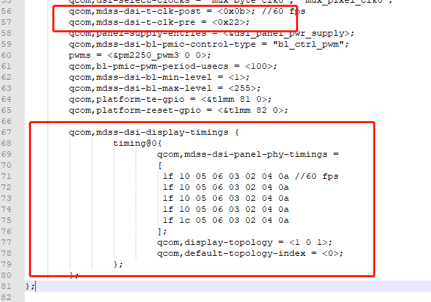
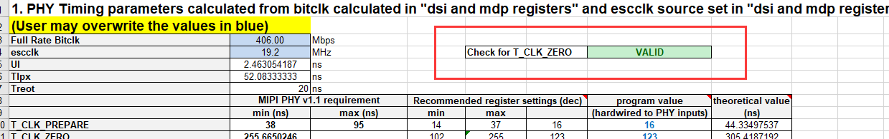
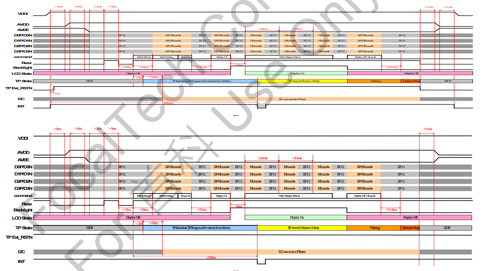
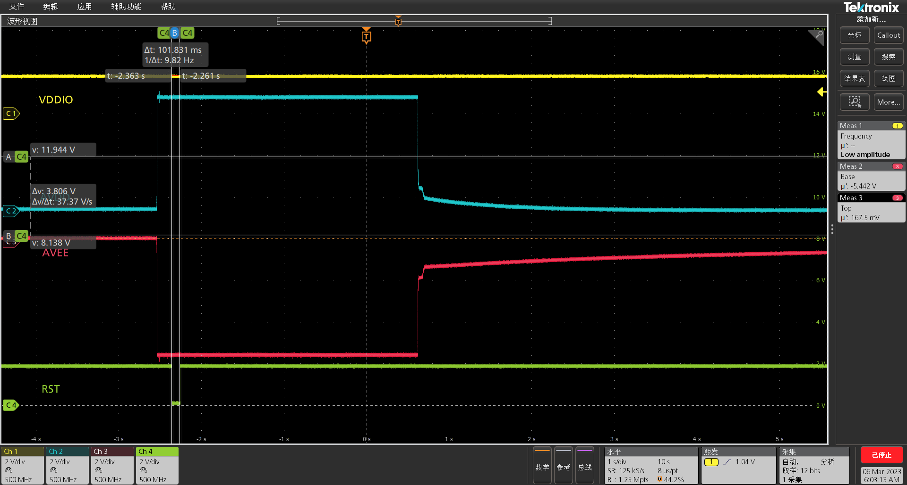

README
高通平台qcm2290，屏驱IC:ILI7807S调试，特性1080x2560分辨率。
refers
ILI7807S Data Sheet for all customer(V001)_20200108.pdf
移远提供patch
供应商提供初始化代码及porch
kernel移植流程
1.dts Panel命令信息
请参考：
2.屏幕物理数据
Timing配置的示例如下图所示：

生成DSI的Timing
Panel需要在DSI PHY寄存器中为bitclk设置PHY值。80-NH713-1_DSI.zip压缩包（压缩文件在工具目录中可用）中的80-nh713-1_yj_dsi timing parameters user interactive spreadsheet.xlsm可用于自动计算timing值。
操作步骤
打开DSI和MDP寄存器表。将frame rate、lane numbers、panel resolution、porch和chip值输入到红线框定的区域。如下图所示:

打开DSI PHY timing setting sheet页，先按ctrl + j清除，然后按ctrl + k重新生成。Check for T_CLK_ZERO值会变成VALID：

打开DSI PHY 2.0.0 timing setting表，查看蓝色字段中与计算出的DSI相关时钟速率。如下图所示：

使用从Excel工作表中获取的上述值更新面板XML文件
。如下所示。值为从上述内容中复制。

最终代码
&dsi_ft8006s_720p_video {
qcom,dsi-select-clocks = "mux_byte_clk0", "mux_pixel_clk0";
qcom,mdss-dsi-t-clk-post = <0x0b>; //60 fps
qcom,mdss-dsi-t-clk-pre = <0x22>;
qcom,panel-supply-entries = <&dsi_panel_pwr_supply>;
qcom,mdss-dsi-bl-pmic-control-type = "bl_ctrl_pwm";
pwms = <&pm2250_pwm3 0 0>;
qcom,bl-pmic-pwm-period-usecs = <100>;
qcom,mdss-dsi-bl-min-level = <1>;
qcom,mdss-dsi-bl-max-level = <255>;
qcom,platform-te-gpio = <&tlmm 81 0>;
qcom,platform-reset-gpio = <&tlmm 82 0>;
qcom,mdss-dsi-display-timings {
timing@0{
qcom,mdss-dsi-panel-phy-timings =
[
1f 10 05 06 03 02 04 0a //60 fps
1f 10 05 06 03 02 04 0a
1f 10 05 06 03 02 04 0a
1f 10 05 06 03 02 04 0a
1f 1c 05 06 03 02 04 0a
];
qcom,display-topology = <1 0 1>;
qcom,default-topology-index = <0>;
};
};
};
/* Copyright (c) 2016-2018, The Linux Foundation. All rights reserved.
*
* This program is free software; you can redistribute it and/or modify
* it under the terms of the GNU General Public License version 2 and
* only version 2 as published by the Free Software Foundation.
*
* This program is distributed in the hope that it will be useful,
* but WITHOUT ANY WARRANTY; without even the implied warranty of
* MERCHANTABILITY or FITNESS FOR A PARTICULAR PURPOSE. See the
* GNU General Public License for more details.
*/
&mdss_mdp {
dsi_ft8006s_720p_video: qcom,mdss_dsi_ft8006s_720p_video {
qcom,mdss-dsi-panel-name ="ft8006s video mode dsi panel without DSC";
qcom,mdss-dsi-panel-type = "dsi_video_mode";
qcom,dsi-ctrl-num = <0>;
qcom,dsi-phy-num = <0>;
qcom,mdss-dsi-virtual-channel-id = <0>;
qcom,mdss-dsi-stream = <0>;
qcom,mdss-dsi-h-left-border = <0>;
qcom,mdss-dsi-h-right-border = <0>;
qcom,mdss-dsi-v-top-border = <0>;
qcom,mdss-dsi-v-bottom-border = <0>;
qcom,mdss-dsi-bpp = <24>;
qcom,mdss-dsi-color-order = "rgb_swap_rgb";
qcom,mdss-dsi-underflow-color = <0xff>;
qcom,mdss-dsi-border-color = <0>;
qcom,mdss-dsi-h-sync-pulse = <0>;
qcom,mdss-dsi-traffic-mode = "non_burst_sync_event";
qcom,mdss-dsi-lane-map = "lane_map_0123";
qcom,mdss-dsi-bllp-eof-power-mode;
qcom,mdss-dsi-bllp-power-mode;
qcom,mdss-dsi-tx-eot-append;
qcom,mdss-dsi-lane-0-state;
qcom,mdss-dsi-lane-1-state;
qcom,mdss-dsi-lane-2-state;
qcom,mdss-dsi-lane-3-state;
qcom,mdss-dsi-dma-trigger = "trigger_sw";
qcom,mdss-dsi-mdp-trigger = "none";
qcom,mdss-dsi-lp11-init;
qcom,mdss-dsi-bl-pmic-control-type = "bl_ctrl_wled";
qcom,mdss-dsi-bl-min-level = <1>;
qcom,mdss-dsi-bl-max-level = <4095>;
qcom,mdss-dsi-reset-sequence = <1 10>, <0 10>, <1 10>;
qcom,mdss-dsi-te-pin-select = <1>;
qcom,mdss-dsi-wr-mem-start = <0x2c>;
qcom,mdss-dsi-wr-mem-continue = <0x3c>;
qcom,mdss-dsi-te-dcs-command = <1>;
qcom,mdss-dsi-te-check-enable;
qcom,mdss-dsi-te-using-te-pin;
qcom,mdss-dsi-display-timings {
timing@0{
qcom,mdss-dsi-panel-width = <720>;
qcom,mdss-dsi-panel-height = <1600>;
qcom,mdss-dsi-h-front-porch = <24>;
qcom,mdss-dsi-h-back-porch = <24>;
qcom,mdss-dsi-h-pulse-width = <16>;
qcom,mdss-dsi-h-sync-skew = <0>;
qcom,mdss-dsi-v-back-porch = <110>;
qcom,mdss-dsi-v-front-porch = <130>;
qcom,mdss-dsi-v-pulse-width = <10>;
qcom,mdss-dsi-panel-framerate = <60>;
qcom,mdss-dsi-on-command =[
05 01 00 00 78 00 02 11 00
05 01 00 00 14 00 02 29 00];
qcom,mdss-dsi-off-command = [05 01 00 00 32 00 02 28 00
05 01 00 00 78 00 02 10 00];
qcom,mdss-dsi-on-command-state = "dsi_lp_mode";
qcom,mdss-dsi-off-command-state = "dsi_hs_mode";
qcom,mdss-dsi-h-sync-pulse = <0>;
};
};
};
};
XBL流程
移植流程
1.增加panel，填写uefiPanelList配置
A665x_Unpacking_Tool/BOOT.XF.4.1/boot_images/QcomPkg/SocPkg/AgattiPkg/Library/MDPPlatformLib/MDPPlatformLib.c:
static PlatformDSIDetectParams uefiPanelList[] = {
MDPPLATFORM_PANEL_ILI7807S_1080P_VIDEO, // eSelectedPanel
};
目前暂不支持读display id的方式兼容多个屏，只能存一个屏。
2.在XBL中添加新屏参数
BOOT.XF.4.1\boot_images\QcomPkg\Settings\Panel\Panel_ili7807s_1080p_video.xml目录下保存所有屏参。
<?xml version="1.0" encoding="utf-8"?>
<PanelName>ILI7807S_1080P</PanelName>
<PanelDescription>ili7807s 1080p video mode dsi panel</PanelDescription>
<Group id="Active Timing">
<HorizontalActive>1080</HorizontalActive>
<HorizontalFrontPorch>22</HorizontalFrontPorch>
<HorizontalBackPorch>23</HorizontalBackPorch>
<HorizontalSyncPulse>4</HorizontalSyncPulse>
<HorizontalSyncSkew>0</HorizontalSyncSkew>
<HorizontalLeftBorder>0</HorizontalLeftBorder>
<HorizontalRightBorder>0</HorizontalRightBorder>
<VerticalActive>2408</VerticalActive>
<VerticalFrontPorch>12</VerticalFrontPorch>
<VerticalBackPorch>12</VerticalBackPorch>
<VerticalSyncPulse>2</VerticalSyncPulse>
<VerticalSyncSkew>0</VerticalSyncSkew>
<VerticalTopBorder>0</VerticalTopBorder>
<VerticalBottomBorder>0</VerticalBottomBorder>
</Group>
<Group id="Display Interface">
<InterfaceType>8</InterfaceType>
<InterfaceColorFormat>3</InterfaceColorFormat>
</Group>
<Group id="DSI Interface">
<DSIChannelId>1</DSIChannelId>
<DSIVirtualId>0</DSIVirtualId>
<DSIColorFormat>36</DSIColorFormat>
<DSITrafficMode>1</DSITrafficMode>
<DSILanes>4</DSILanes>
<DSILowPowerModeInBLLPEOF>True</DSILowPowerModeInBLLPEOF>
<DSILowPowerModeInBLLP>True</DSILowPowerModeInBLLP>
<DSIRefreshRate>0x280000</DSIRefreshRate>
<DSIDynamicRefreshRates>0x3B0000 0x3B4000 0x3B8000 0x3BC000 0x3C0000</DSIDynamicRefreshRates>
<DSICmdSwapInterface>False</DSICmdSwapInterface>
<DSICmdUsingTrigger>False</DSICmdUsingTrigger>
<DSIControllerMapping>
00
</DSIControllerMapping>
</Group>
<DSIInitSequence>
39 FF 78 07 01
39 00 41
39 01 50
39 02 00
39 03 5C
39 08 81
39 09 06
39 0a 70
39 0c 00
39 0e 51
39 31 02
39 32 07
39 33 07
39 34 07
39 35 07
39 36 07
39 37 07
39 38 36
39 39 35
39 3a 34
39 3b 30
39 3c 2F
39 3d 2E
39 3e 2C
39 3f 11
39 40 17
39 41 15
39 42 13
39 43 09
39 44 28
39 45 28
39 46 28
39 47 28
39 48 28
39 49 02
39 4a 07
39 4b 07
39 4c 07
39 4d 07
39 4e 07
39 4f 07
39 50 36
39 51 35
39 52 34
39 53 30
39 54 2F
39 55 2E
39 56 2C
39 57 10
39 58 16
39 59 14
39 5a 12
39 5b 08
39 5c 28
39 5d 28
39 5e 28
39 5f 28
39 60 28
39 61 02
39 62 07
39 63 07
39 64 07
39 65 07
39 66 07
39 67 07
39 68 36
39 69 35
39 6a 34
39 6b 30
39 6c 2F
39 6d 2E
39 6e 2C
39 6f 12
39 70 14
39 71 16
39 72 10
39 73 08
39 74 28
39 75 28
39 76 28
39 77 28
39 78 28
39 79 02
39 7a 07
39 7b 07
39 7c 07
39 7d 07
39 7e 07
39 7f 07
39 80 36
39 81 35
39 82 34
39 83 30
39 84 2F
39 85 2E
39 86 2C
39 87 13
39 88 15
39 89 17
39 8a 11
39 8b 09
39 8c 28
39 8d 28
39 8e 28
39 8f 28
39 90 28
39 A7 00
39 B2 00
39 B3 04
39 F0 2C
39 D1 12
39 D3 40
39 D4 04
39 D8 64
39 E6 22
39 D5 12
39 D9 85
39 E1 08
39 DA 01
39 DB 01
39 DC 08
39 DD 98
39 FF 78 07 11
39 38 00
39 39 4C
39 FF 78 07 02
39 01 55
39 02 09
39 40 01
39 41 00
39 42 0A
39 43 2E
39 1B 02
39 46 22
39 47 03
39 82 32
39 53 06
39 76 13
39 80 32
39 06 6D
39 08 00
39 0E 0E
39 0F 0C
39 24 16
39 4E C4
39 FF 78 07 12
39 48 00
39 49 00
39 4A 09
39 4B 2C
39 4E 06
39 52 13
39 53 22
39 C8 6D
39 C9 00
39 CA 0E
39 CB 0C
39 01 44
39 03 44
39 FF 78 07 04
39 B7 CF
39 B8 45
39 BA 74
39 BD 01
39 FF 78 07 05
39 1D 00
39 1E 87
39 1F 00
39 20 87
39 61 CB
39 72 75
39 74 41
39 76 70
39 7A 3C
39 7B 85
39 7C 85
39 C6 1B
39 56 FF
39 46 55
39 B5 55
39 3E 50
39 56 FF
39 FF 78 07 06
39 C0 68
39 C1 19
39 C3 06
39 13 13
39 12 BD
39 FF 78 07 07
39 03 20
39 11 16
39 12 00
39 29 00
39 FF 78 07 08
39 E0 00 00 20 52 00 93 C0 E3 15 19 42 80 25 B0 F7 2E 2A 65 A4 CB 3E FE 23 4E 3F 67 89 BA 0F D8 D9
39 E1 00 00 20 52 00 93 C0 E3 15 19 42 80 25 B0 F7 2E 2A 65 A4 CB 3E FE 23 4E 3F 67 89 BA 0F D8 D9
39 FF 78 07 0B
39 94 88
39 95 23
39 96 06
39 97 06
39 98 CB
39 99 CB
39 9A 46
39 9B D6
39 9C 05
39 9D 05
39 9E AB
39 9F AB
39 AA 12
39 AB E0
39 C6 88
39 C7 21
39 C8 06
39 C9 06
39 CA CB
39 CB CB
39 D8 06
39 D9 D7
39 DA 05
39 DB 05
39 DC AB
39 DD AB
39 FF 78 07 0C
39 40 22
39 41 3C
39 42 21
39 43 36
39 44 21
39 45 36
39 46 23
39 47 48
39 48 20
39 49 31
39 4A 21
39 4B 37
39 4C 22
39 4D 3F
39 4E 22
39 4F 3D
39 50 21
39 51 38
39 52 22
39 53 40
39 54 22
39 55 3E
39 56 22
39 57 43
39 58 21
39 59 39
39 5A 22
39 5B 41
39 5C 21
39 5D 35
39 5E 22
39 5F 45
39 60 21
39 61 33
39 62 22
39 63 3B
39 64 20
39 65 30
39 66 22
39 67 44
39 68 22
39 69 3A
39 6A 22
39 6B 42
39 6C 22
39 6D 46
39 6E 21
39 6F 32
39 70 21
39 71 34
39 80 20
39 81 3A
39 82 20
39 83 39
39 84 20
39 85 39
39 86 20
39 87 31
39 88 20
39 89 33
39 8A 20
39 8B 34
39 8C 20
39 8D 30
39 8E 21
39 8F 45
39 90 21
39 91 42
39 92 21
39 93 3F
39 94 21
39 95 40
39 96 21
39 97 47
39 98 20
39 99 3C
39 9A 21
39 9B 46
39 9C 21
39 9D 48
39 9E 21
39 9F 41
39 A0 21
39 A1 44
39 A2 20
39 A3 3D
39 A4 20
39 A5 36
39 A6 20
39 A7 38
39 A8 20
39 A9 3E
39 AA 20
39 AB 35
39 AC 20
39 AD 3B
39 AE 20
39 AF 32
39 B0 20
39 B1 37
39 FF 78 07 0E
39 00 A3
39 B9 CC
39 02 0F
39 04 06
39 13 04
39 41 14
39 42 02
39 43 14
39 44 82
39 40 03
39 45 0B
39 46 72
39 47 20
39 49 5B
39 B0 01
39 B1 68
39 C0 02
39 C2 68
39 C3 68
39 C4 68
39 C5 68
39 C6 68
39 C7 68
39 C8 68
39 C9 68
39 4D CF
39 50 00
39 4B 18
39 05 20
39 E0 01
39 E2 0A
39 E3 2E
39 E5 06
39 FF 78 07 1E
39 BD 02
39 B1 11
39 61 17
39 63 17
39 60 0B
39 65 0B
39 66 0D
39 67 00
39 69 C9
39 6B 18
39 16 5E
39 1E 5E
39 1F 5E
39 6D BB
39 70 00
39 B4 28
39 B5 60
39 B6 8C
39 B7 1A
39 BA 00
39 20 00
39 22 09
39 23 2C
39 24 06
39 C9 02
39 C0 1F
39 C1 00
39 C2 1C
39 C3 1C
39 C4 1A
39 C7 00
39 FF 78 07 00
39 11 00
39 29 00
39 35 00
05 11 00
ff 78
05 29 00
ff 05
</DSIInitSequence>
<DSITermSequence>
05 28
FF 14
05 10
FF 78
</DSITermSequence>
<Group id='Backlight Configuration'>
<BacklightType>1</BacklightType>
<BacklightPmicControlType>2</BacklightPmicControlType>
<DisplayResetInfo>0 10 10000 10000 0</DisplayResetInfo>
</Group>
3.添加定义
BOOT.XF.4.1\boot_images\QcomPkg\Include\LibraryMDPPlatformLib.h中定义了MDPPlatformPanelType：
--- a/A665x_Unpacking_Tool/BOOT.XF.4.1/boot_images/QcomPkg/Include/Library/MDPPlatformLib.h
+++ b/A665x_Unpacking_Tool/BOOT.XF.4.1/boot_images/QcomPkg/Include/Library/MDPPlatformLib.h
@@ -108,20 +108,14 @@ typedef enum {
MDPPLATFORM_PANEL_BOE_AMOLED_FHD_DSC_CMD, /* BOE AMOLED fhd plus cmd panel DSC mode single dsi */
MDPPLATFORM_PANEL_TRULY_RM69298_AMOLED_FHD_CMD, /* Truly rm69298 amoled fhd cmd panel single dsi */
MDPPLATFORM_PANEL_TRULY_RM69298_AMOLED_FHD_VIDEO, /* Truly rm69298 amoled fhd video panel single dsi*/
- MDPPLATFORM_PANEL_TD4330_TRULY_FHD_CMD, /* td4330 cmd mode dsi truly panel (Nicobar) */
- MDPPLATFORM_PANEL_TD4330_TRULY_FHD_VIDEO, /* td4330 video mode dsi truly panel (Nicobar) */
MDPPLATFORM_PANEL_TD4330_V2_TRULY_FHD_CMD, /* td4330 cmd mode dsi truly panel */
MDPPLATFORM_PANEL_TD4330_V2_TRULY_FHD_VIDEO, /* td4330 video mode dsi truly panel */
- MDDPLATFORM_PANEL_NT36672_TRUKY_FHD_VIDEO, /* nt36672 truly 9:21 video mode */
MDPPLATFORM_PANEL_NT36525_TRULY_HDPLUS_VIDEO, /* nt36525 truly hdplus video mode */
- MDPPLATFORM_PANEL_R66451_AMOLED_HDPLUS_CMD, /* r66451 hd plus 90hz cmd mode */
- MDPPLATFORM_PANEL_R66451_AMOLED_HDPLUS_VIDEO, /* r66451 hd plus 90hz video mode */
- MDPPLATFORM_PANEL_NT36672E_90HZ_FHD_PLUS_VIDEO, /* nt36672e 90hz fhd plus video mode */
- MDPPLATFORM_PANEL_NT36672E_120HZ_FHD_PLUS_VIDEO, /* nt36672e 120hz fhd plus video mode */
- MDPPLATFORM_PANEL_EXT_BRIDGE_1080P_VIDEO, /* External bridge 1080p vid */
- MDPPLATFORM_PANEL_ILI9881C_720P_VIDEO, /* ILI9881C lcd video mode panel */
MDPPLATFORM_PANEL_HX8394F_720P_VIDEO,
MDPPLATFORM_PANEL_ILI9881D_720P_VIDEO,
+ MDPPLATFORM_PANEL_ILI7807S_1080P_VIDEO, //30
+ MDPPLATFORM_PANEL_ILI9881C_720P_VIDEO, /* ILI9881C lcd video mode panel */
+ MDPPLATFORM_PANEL_EXT_BRIDGE_1080P_VIDEO, /* External bridge 1080p vid */
MDPPLATFORM_PANEL_MAX
} MDPPlatformPanelType;
去掉一部分是因为该枚举数需要和上下电时序里的数组序号对应上，比如MDPPLATFORM_PANEL_ILI7807S_1080P_VIDEO是30，那sMDPPlatformPanelFunction[MDPPLATFORM_PANEL_MAX]中对应的序号也是30才对应得上，下面会讲。
4.定义上下电时序
BOOT.XF.4.1\boot_images\QcomPkg\SocPkg\AgattiPkg\Library\MDPPlatformLib:
--- a/A665x_Unpacking_Tool/BOOT.XF.4.1/boot_images/QcomPkg/SocPkg/AgattiPkg/Library/MDPPlatformLib/MDPPlatformLibPanelConfig.h
+++ b/A665x_Unpacking_Tool/BOOT.XF.4.1/boot_images/QcomPkg/SocPkg/AgattiPkg/Library/MDPPlatformLib/MDPPlatformLibPanelConfig.h
@@ -208,6 +208,16 @@ MDPPlatformPanelFunctionTable sMDPPlatformPanelFunction[MDPPLATFORM_PANEL_MAX] =
Panel_Default_Peripheral_Power, // pPanel_Peripheral_Power
Panel_Default_Brightness_Enable, // pPanel_Brightness_Enable
Panel_Default_Brightness_Level // pPanel_Brightness_Level
+ },
+ { /* Pax Panel */
+ MDPPLATFORM_PANEL_ILI7807S_1080P_VIDEO, // ePanelSelected
+ "Panel_ili7807s_1080p_video.xml", // pPanelXmlConfig
+ Panel_Default_PowerUp, // pPanel_PowerUp
+ Panel_Default_PowerDown, // pPanel_PowerDown
+ Panel_Default_Reset, // pPanel_Reset
+ Panel_Default_Peripheral_Power, // pPanel_Peripheral_Power
+ Panel_Default_Brightness_Enable, // pPanel_Brightness_Enable
+ Panel_Default_Brightness_Level // pPanel_Brightness_Level
},
5.增加fastboot模式下panel
fastboot模式会选择fastBootPanelList中作为panel：
@@ -197,6 +211,8 @@ const PanelDTInfoType fastBootPanelList[] =
PANEL_CREATE_ENTRY("hx8394f_720p_video", MDPPLATFORM_PANEL_HX8394F_720P_VIDEO, "qcom,mdss_dsi_hx8394f_720p_video:", DISP_INTF_DSI, DISP_TOPOLOGY_CONFIG_NONE, DISP_TIMING_CONFIG_N
ONE, PLL_OVERRIDE_NONE, DISP_MODE_SINGLE_DSI, DISP_MODE_SINGLE_DSI, DISP_MODE_SINGLE_DSI),
PANEL_CREATE_ENTRY("ili9881d_720p_video", MDPPLATFORM_PANEL_ILI9881D_720P_VIDEO, "qcom,mdss_dsi_ili9881d_720p_video:", DISP_INTF_DSI, DISP_TOPOLOGY_CONFIG_NONE, DISP_TIMING_CONFIG_
NONE, PLL_OVERRIDE_NONE, DISP_MODE_SINGLE_DSI, DISP_MODE_SINGLE_DSI, DISP_MODE_SINGLE_DSI),
+ PANEL_CREATE_ENTRY("ili7807S_1080p_video", MDPPLATFORM_PANEL_ILI7807S_1080P_VIDEO, "qcom,mdss_dsi_ili7807S_1080p_video:", DISP_INTF_DSI, DISP_TOPOLOGY_CONFIG_NONE, DISP_TIMING_CONFIG
_NONE, PLL_OVERRIDE_NONE, DISP_MODE_SINGLE_DSI, DISP_MODE_SINGLE_DSI, DISP_MODE_SINGLE_DSI),
+
6.指定xml地址
配置Display panel configuration xml时需要增加一个Guid，就是唯一标识，可以由以下工具生成：
--- a/A665x_Unpacking_Tool/BOOT.XF.4.1/boot_images/QcomPkg/SocPkg/AgattiPkg/LAA/Core.fdf
+++ b/A665x_Unpacking_Tool/BOOT.XF.4.1/boot_images/QcomPkg/SocPkg/AgattiPkg/LAA/Core.fdf
@@ -444,6 +444,11 @@ FvNameGuid = 631008B0-B2D1-410A-8B49-2C5C4D8ECC7E
SECTION UI = "Panel_ili9881d_720p_video.xml"
SECTION RAW = QcomPkg/Settings/Panel/Panel_ili9881d_720p_video.xml
}
+
+ FILE FREEFORM = b04153d9-84e9-4660-872c-47aed4572f2b {
+ SECTION UI = "Panel_ili7807s_1080p_video.xml"
+ SECTION RAW = QcomPkg/Settings/Panel/Panel_ili7807s_1080p_video.xml
+ }
代码流程
根据配置文件QcomPkg/SocPkg/AgattiPkg/LAA/Core.fdf增加了显示驱动，在fdf文件中包含所有的inf文件所在路径：
# Display/MDP DXE driver
#
INF QcomPkg/Drivers/DisplayDxe/DisplayDxe.inf
QcomPkg/Drivers/DisplayDxe/DisplayDxe.inf：
[Defines]
INF_VERSION = 0x00010005
BASE_NAME = DisplayDxe
FILE_GUID = 4138022F-06C7-4f79-9C94-7E33B511A4E7
MODULE_TYPE = DXE_DRIVER
VERSION_STRING = 1.0
ENTRY_POINT = DisplayDxeInitialize //定义入口函数
以下是MDP初始化屏的流程：
* DisplayDxeInitialize //入口函数
├── MDPInit(MDP_InitParamsType *pMDPInitParams, uint32 uFlags) //Drivers/DisplayDxe/DisplayDxe.c
│ └── MDPPlatformConfigure(MDP_DISPLAY_PRIMARY, MDPPLATFORM_CONFIG_GETPLATFORMINFO, &sPlatformParams) //QcomPkg/SocPkg/DivarPkg/Library/MDPPlatformLib/MDPPlatformLib.c
│ └── case MDPPLATFORM_CONFIG_GETPANELCONFIG: //上面函数第二个参数
│ └── case MDP_DISPLAY_PRIMARY: //上面函数第一个参数
│ ├── *pPanelList = &uefiPanelList[0]; //这里写死只有一个屏，uefiPanelList里面就是指定屏的参数，包括id
│ ├── if (MDP_STATUS_OK == DynamicDSIPanelDetection(&sPlatformPanel, &uPanelID, pPanelList, uPanelCnt) //根据pPanelList匹配屏的panel
│ │ └── if (MDP_STATUS_OK == DSIDriver_MinimalInit()) //DSI驱动minimal初始化
│ │ ├── if (MDP_STATUS_OK != DSIDriver_ConfigClockLane(uClkConfig))
│ │ ├── if (MDP_STATUS_OK != DSIDriver_RemapLane(pPanelList[uPanelIndex].uLaneRemapOrder))
│ │ ├── MDP_OSAL_MEMZERO(panelID, PLATFORM_PANEL_ID_MAX_COMMANDS); //清空panelID数组
│ │ └── for(iCommandIndex = 0; iCommandIndex<PLATFORM_PANEL_ID_MAX_COMMANDS; iCommandIndex++) //PLATFORM_PANEL_ID_MAX_COMMANDS = 3，也就是连续读三次，读到了即返回。
│ │ ├── DSIDriver_Read(pPanelList[uPanelIndex].uCmdType,pPanelList[uPanelIndex].panelIdCommands[iCommandIndex].address, //这里是uefiPanelList中读取display id的，貌似暂时没用
│ │ ├── if (0 == CompareMem(readback, pPanelList[uPanelIndex].panelIdCommands[iCommandIndex].expectedReadback, readSize)) //比较读取到的id和uefiPanelList中expect值是否一致
│ │ │ ├── panelID[iCommandIndex] = readback[0];// store the first byte of readback as panel ID
│ │ │ └── bMatch = TRUE; // mark one panel ID matched
│ │ └── pPlatformPanel->eSelectedPanel = pPanelList[uPanelIndex].eSelectedPanel; //保存选取的panel
│ ├── if (MDP_STATUS_OK != FindPanelIndex(&sPlatformPanel))//需要重做映射 eSelectedPanle 到 uSelectedPanleIndex 以防检测到较新的 eSelectedPanel
│ └── if(MDP_STATUS_OK != GetPanelXmlConfig(&sPlatformPanel)) //获取xml文件
│ ├── pPlatformParams->sPlatformPanel.pPanelXMLConfig = (int8 *)dummy_xmldata; //如果获取不到赋值一个dummy空的panel
│ ├── else MDP_OSAL_MEMCPY(&pPlatformParams->sPlatformPanel, &sPlatformPanel, sizeof(MDPPlatformPanelInfo));//否则正常走这里，拷贝xml数据
│ └── Display_Utils_LoadFile(sMDPPlatformPanelFunction[pPlatformPanel->uSelectedPanelIndex].pPanelXml,
│ └── ReadFromFV(LogoFile, (void **)Buffer, &BufferSizeN); //从logo文件中读取？
└── MDPDetect(MDP_DISPLAY_PRIMARY, &sDetectParams, 0x0) //Default reporting of primary display
├── case MDP_DISPLAY_PRIMARY:
│ └── MDPDetectPanel(eDisplayId, pDisplayInfo) //Panel detection code, via XML, I2C or EDID
│ └── pDisplayInfo->bDetected = TRUE; //暂时不做分析
└── Display_Utils_SetPanelConfiguration(eSelectedPanel); //Update ABL with selected panel info
└── UpdatePanelConfiguration(eSelected, pConfigStr);
└── panelConfigOutput(pDisplayParams->sPrimary.psDTInfo, 1, pDisplayParams->sPrimary.eTopologyCfg, pDisplayParams->sPrimary.eTimingCfg, &pStr);
└── if (primary)
├── #define DISPLAY_CMDLINE_DSI_PRIMARY " msm_drm.dsi_display0=" // Panel config prefix
├── LocalAsciiStrnCat(*ppStr, PANEL_CONFIG_STR_LEN_MAX, DISPLAY_CMDLINE_DSI_PRIMARY); // 设置display cmdline 重要
└── (*ppStr) += AsciiStrLen(DISPLAY_CMDLINE_DSI_PRIMARY);
调试
1.无法获取xml文件
xbl按照文档操作增加新屏后机器获取不到panel，用的是dummy，打印如下：
HW Wdog Setting from PCD : Disabled
PM0: 55,
Setvariable returned Success
DisplayDxe: Resolution 640x480 (1 intf)
MinidumpTADxe: Minidump TA loading not enabled.
Disp init wait [ 1736]
-----------------------------
Platform Init [ 1779] BDS
UEFI Ver : 5.0.220714.BOOT.XF.4.1-00343-KAMORTALAZ-1
Platform : IDP
Chip Name : QCM_AGATTI
Chip Ver : 1.0
Chip Serial Number : 0xC54520C0
开发板自带屏打印如下：
addr:FFDB0C50 readback[0] = 0
addr:FFDB0C50 readback[1] = 0
Detected panel id:00980000 pPlatformPanel->eSelectedPanel = 30
wugn Detected panel id:00980000 pPlatformPanel->eSelectedPanel = 30 bMatch = 1
wugn test1 uPanelId = 9961472
Status = 0
DeStatus 0 pPlatformPanel->uSelectedPanelIndex = 30 xml = Pnlii81_2pvdoxlPnlii87_00_ie.mwugn test1 Copy the panel configurations
wugn test2 uPanelId = 9961472
wugn DisplayDxe: Resolution 720x1280 (1 intf) pPanelInfo->eSelectedPanel = 30
MinidumpTADxe: Minidump TA loading not enabled.
Disp init wait [ 2588]
添加打印,改成30也不行。
Status = ReadFromFV(LogoFile, (void **)Buffer, &BufferSizeN);
DEBUG((EFI_D_ERROR, "Status = %d\n", Status));
if (EFI_ERROR(Status) || (Buffer == NULL))
{
Status = EFI_LOAD_ERROR;
if (EFI_ERROR(Status)) {
DEBUG((EFI_D_ERROR, "Display_Utils_LoadFile: 44444.\n"));
}
else
{
DEBUG((EFI_D_ERROR, "Display_Utils_LoadFile: 555555.\n"));
}
if(Buffer != NULL)
{
DEBUG((EFI_D_ERROR, "Buffer is not null\n"));
}
}
*RetSize = (UINT32) BufferSizeN;
}
打印如下，说明ReadFromFV返回失败，不是buffer为空，具体不知道什么原因。
addr:FFDB0C50 readback[0] = 0
addr:FFDB0C50 readback[1] = 0
wugn Detected panel id:00000000 pPlatformPanel->eSelectedPanel = 30 bMatch = 0
Status = 14
Display_Utils_LoadFile: 44444.
Buffer is not null
Display_Utils_LoadFile fail
xml = Pnlh89f70_ie.mDeStatus 5 pPlatformPanel->uSelectedPanelIndex = 30 xml = Pnlii87_00_ie.mwugn test1 Get the panel not ok eSelectedPanel = 30
wugn test2 uPanelId = 0
wugn DisplayDxe: Resolution 640x480 (1 intf) pPanelInfo->eSelectedPanel = 30
后面发现原装屏在QcomPkg/SocPkg/AgattiPkg/LAA/Core.fdf路径下配置了如下信息，新屏增加如下即可：
--- a/A665x_Unpacking_Tool/BOOT.XF.4.1/boot_images/QcomPkg/SocPkg/AgattiPkg/LAA/Core.fdf
+++ b/A665x_Unpacking_Tool/BOOT.XF.4.1/boot_images/QcomPkg/SocPkg/AgattiPkg/LAA/Core.fdf
@@ -444,6 +444,11 @@ FvNameGuid = 631008B0-B2D1-410A-8B49-2C5C4D8ECC7E
SECTION UI = "Panel_ili9881d_720p_video.xml"
SECTION RAW = QcomPkg/Settings/Panel/Panel_ili9881d_720p_video.xml
}
+
+ FILE FREEFORM = b04153d9-84e9-4660-872c-47aed4572f2b {
+ SECTION UI = "Panel_ili7807s_1080p_video.xml"
+ SECTION RAW = QcomPkg/Settings/Panel/Panel_ili7807s_1080p_video.xml
+ }
成功打印如下：
addr:FFDB2C50 readback[0] = 0
addr:FFDB2C50 readback[1] = 0
wugn Detected panel id:00000000 pPlatformPanel->eSelectedPanel = 31 bMatch = 0
Status = 0
DeStatus 0 pPlatformPanel->uSelectedPanelIndex = 31 xml = Pnlii87_00_ie.mwugn test1 Copy the panel configurati ons
wugn test2 uPanelId = 0
wugn DisplayDxe: Resolution 1080x2408 (1 intf) pPanelInfo->eSelectedPanel = 31
MinidumpTADxe: Minidump TA loading not enabled.
Disp init wait [ 1723]
input CTRL+C enter ALLPIN mode
2.kernel调试
xbl调通了，kernel继续报错重启如下，没找到panel，没找到reset gpio引脚：
[ 5.302352] [drm:dsi_ctrl_dev_probe] [msm-dsi-info]: dsi-ctrl-0: Probe successful
[ 5.310951] OF: graph: no port node found in /soc/qcom,dsi-display-primary
[ 5.317957] [drm:dsi_panel_get] *ERROR* [msm-dsi-error]: [ili7807s video mode dsi panel without DSC] failed get reset gpio, rc=-2
[ 5.329659] [drm:dsi_panel_get] *ERROR* [msm-dsi-error]: failed to parse panel gpios, rc=-2
[ 5.338041] [drm:dsi_display_init] *ERROR* [msm-dsi-error]: failed to get panel, rc=-2
[ 5.345987] [drm:dsi_display_init] *ERROR* [msm-dsi-error]: [(null)] failed to initialize resources, rc=-2
[ 5.355688] [drm:dsi_display_init] *ERROR* [msm-dsi-error]: device init failed, rc=-2
[ 5.363560] msm-dsi-display: probe of soc:qcom,dsi-display-primary failed with error -2
[ 11.164824] [drm:msm_pdev_shutdown] *ERROR* invalid drm device node
[ 11.171551] reboot: Restarting system with command 'userrequested,recovery'
[ 11.178566] Going down for restart now
dts里面检索一下ili9881d，按照ili9881d的dts全部重新配置 一遍：
wugn@jcrj-tf-compile:a665x$ ack ili9881d
scuba-sde-display.dtsi
6:#include "dsi-panel-ili9881d-720p-video.dtsi"
145:&dsi_ili9881d_720p_video {
dsi-panel-ili9881d-720p-video.dtsi
14: dsi_ili9881d_720p_video: qcom,mdss_dsi_ili9881d_720p_video {
15: qcom,mdss-dsi-panel-name ="ili9881d video mode dsi panel without DSC";
scuba-iot-idp.dtsi
107:&dsi_ili9881d_720p_video {
197: panel = <&dsi_ili9881d_720p_video>;
重新整合一下dts如下：
--- a/UM.9.15/vendor/qcom/proprietary/devicetree-4.19/qcom/a665x/a665x-scuba-iot-idp-overlay.dts
+++ b/UM.9.15/vendor/qcom/proprietary/devicetree-4.19/qcom/a665x/a665x-scuba-iot-idp-overlay.dts
@@ -3,6 +3,7 @@
#include <dt-bindings/interrupt-controller/arm-gic.h>
#include "scuba-iot-idp.dtsi"
+#include "dsi-panel-ili7807s-1080p-video.dtsi"
/ {
model = "Qualcomm Technologies, Inc. Scuba IOT IDP";
@@ -314,4 +315,37 @@
otg-output-current-limit = <2100>; /* Boost output current limit, Range 500-1500-2100-3000 ma */
irq-pin = <&tlmm 86 GPIO_ACTIVE_HIGH>;
};
+};
+
+&sde_dsi {
+ qcom,dsi-default-panel = <&dsi_ili7807s_1080p_video>;
+};
+
+&dsi_ili7807s_1080p_video {
+ qcom,dsi-select-clocks = "mux_byte_clk0", "mux_pixel_clk0";
+ qcom,mdss-dsi-t-clk-post = <0x0e>; //60 fps
+ qcom,mdss-dsi-t-clk-pre = <0x34>;
+ qcom,panel-supply-entries = <&dsi_panel_pwr_supply>;
+ qcom,mdss-dsi-bl-pmic-control-type = "bl_ctrl_pwm";
+ pwms = <&pm2250_pwm3 0 0>;
+ qcom,bl-pmic-pwm-period-usecs = <100>;
+ qcom,mdss-dsi-bl-min-level = <1>;
+ qcom,mdss-dsi-bl-max-level = <255>;
+ qcom,platform-te-gpio = <&tlmm 81 0>;
+ qcom,platform-reset-gpio = <&tlmm 82 0>;
+
+ qcom,mdss-dsi-display-timings {
+ timing@0{
+ qcom,mdss-dsi-panel-phy-timings =
+ [
+ 25 1e 08 0a 06 02 04 0a //60 fps
+ 25 1e 08 0a 06 02 04 0a
+ 25 1e 08 0a 06 02 04 0a
+ 25 1e 08 0a 06 02 04 0a
+ 21 1f 09 0a 06 02 04 0a
+ ];
+ qcom,display-topology = <1 0 1>;
+ qcom,default-topology-index = <0>;
+ };
+ };
};
3.ESD检测功能
下面以 reg_read 方式对 esd 功能配置和代码实现流程进行分析Esd 配置在不同平台，配置会有些许差异在 Android9 平台配置需要配置如下参数： qcom,esd-check-enabled;
–>打开 esd 检测开关 qcom,mdss-dsi-panel-status-check-mode = “reg_read”;
–>选择 esd 控制方式 qcom,mdss-dsi-panel-status-command = [06 01 00 01 00 00 01 0a];
其中第一个参数 表示这行帧命令的类型
第七个参数 表示读取几个寄存器，有时一个参数判断域 导致 esd 机制不生效，这是需要多加几个寄存器，实现更严格的 esd 检测
第八个参数 表示读取的寄存器的地址
qcom,mdss-dsi-panel-status-command-state = “dsi_hs_mode”;
esd 状态检测模式
D-PHY 的物理层支持 HS(High Speed)和 LP(Low Power)两种工作模式
HS 模式：低压查分信号 功耗大 高速率（80M -1Gbps） 信号幅值（100mv-300mv）
LP 模式：单端信号 功耗小，速率低（< 10Mbps) 信号幅值（0-1.2V）
qcom,mdss-dsi-panel-status-value = <0x9c>; 预设的值，用来和寄存器读取的值进行比较， 判断当前 LCD 状态是否正常
qcom,mdss-dsi-panel-status-read-length = <1>; 读取长度
Android10 平台区别于 Android9 需要修改如下参数
qcom,mdss-dsi-panel-status-command = [06 01 00 01 05 00 01 0a];
qcom,mdss-dsi-panel-status-command-state = "dsi_lp_mode"
代码流程
在 dtsi 中配置 qcom,mdss-dsi-panel-status-check-mode = “reg_read”;
mdss_check_dsi_ctrl_status() ——>>>>中断函数，通过设置中断，几秒检测一次 esd的状态， ESD 检测线程唤醒时间不建议修改，过于频繁的唤醒 ESD 线程，会增加系统负荷，2s-5s 是内部考量后较为合理的时间选择，建议保持
mdss_dsi_reg_status_check –>>>> mdss_dsi_read_status 读取 esd 的寄存器状态，判断是否能通过 mdss-dsi-panel-statuscommand 命令读到寄存器的值——>>>>
rc=mdss_dsi_cmdlist_put(ctrl,&cmdreq);–判断当前寄存器状态，如果不对，再判断是否触发同步等待原因
ret= ctrl->cmdlist_commit(ctrl,0);
mdss_dsi_cmdlist_commit(ctrl_pdata,1);
—>>>> ret = mdss_dsi_cmdlist_rx(ctrl, req);判断当前函数命令的帧类型是否正确（目前常用的帧类型有 04 06 14 24）
—>>>>len = mdss_dsi_cmds_rx(ctrl, req->cmds, req->rlen,(req->flags & CMD_REQ_DMA_TPG));
—>>>>mdss_dsi_gen_read_status 比较寄存器状态，可以在该函数中添加以下打印来读取屏参寄存器
pr_info(“%s:LCD esd check status vaule = %x\n”,func,ctrl_pdata->status_buf.data[0]);
调试代码时可以添加如下更加详细的 patch 进行分析代码流程逻辑，看 esd 状态是卡在哪个流程函数中。
4.xbl阶段增加寄存器
供应商提供如下寄存器：
//Stop reload
SSD_SEND(0x41,0x5A);
//SPI Not LoadFinish
SSD_SEND(0x41,0x5A,0x24);
SSD_SEND(0x90,0x5A);
//VCOM
SSD_SEND(0x41,0x5A,0x03);
SSD_SEND(0x80,0xd0,0x00);
//SPI FINISH
SSD_SEND(0x42,0x24);
SSD_SEND(0x90,0x00);
//Blank select 2F
SSD_SEND(0x41,0x5A,0x2F);
SSD_SEND(0x19,0x01);
//INT CANCEL
SSD_SEND(0x4C,0x03);
DCS_Short_Write_NP(0x11);
Delay (120);
DCS_Short_Write_NP(0x29);
Delay(50);
修改：
<DSIInitSequence>
39 41 5A
39 41 5A 24
39 90 5A
39 41 5A 03
39 80 D0 00
39 42 24
39 90 00
39 41 5A 2F
39 19 01
39 4C 03
05 11 00
ff 78
05 29 00
ff 05
</DSIInitSequence>
5.多屏兼容调试
目前是只读到了DA并且匹配上了，其他的都是0：
FindPanelIndex: Panel Id=29 found
uPanelIndex: 0 address:000000DA readback[0]:00000033
iCommandIndex: 0 bMatch OK readback:00000033 expectedReadback:00000033
uPanelIndex: 0 address:000000DB readback[1]:00000000
iCommandIndex: 1 bMatch OK readback:00000000 expectedReadback:00000000
uPanelIndex: 0 address:000000DC readback[2]:00000000
iCommandIndex: 2 bMatch OK readback:00000000 expectedReadback:00000000
Detected panel id:00000023
Detected panel id:00000023 pPlatformPanel->eSelectedPanel = 35 bMatch = 1
FindPanelIndex: Panel Id=29 found
使用dump register功能dump出来确实又有写入：
0x00D8 0x00000000 0x00000000 0x00000033 0x000000CD
0x00DC 0x00000004 0x00000000 0x00000000 0x00000000
代码中只要读到一个寄存器匹配上就直接跳出了，修改需要3个寄存器同时满足匹配才算match ok：
--- a/A665x_Unpacking_Tool/BOOT.XF.4.1/boot_images/QcomPkg/SocPkg/AgattiPkg/Library/MDPPlatformLib/MDPPlatformLib.c
+++ b/A665x_Unpacking_Tool/BOOT.XF.4.1/boot_images/QcomPkg/SocPkg/AgattiPkg/Library/MDPPlatformLib/MDPPlatformLib.c
@@ -178,40 +178,38 @@ static PlatformDSIDetectParams uefiPanelList[] = {
0 // uFlags
},
//[M92xx]modified by tfl for tfl for LCD bringup 20221108 --end
- */ {
- 0x06, // uCmdType
- 0x05, // total number of retry on failures
+ {
+ 0x06, // uCmdType
+ 0x05, // total number of retry on failures
{
- {{0xDA, 0x00}, // address to read ID1
- {0x98, 0x00, 0x00, 0x00, 0x00, 0x00, 0x00, 0x00} // expected readback
- }
- },
- 0, // Lane remap order {0, 1, 2, 3}
- NULL, // psPanelCfg (panel configuration)
- 0, // uPanelCfgSize
- MDPPLATFORM_PANEL_ILI9881D_720P_VIDEO, // eSelectedPanel
- 0 // uFlags
+ {{0xDA, 0x00}, // address to read ID1
+ {0x2E, 0x00, 0x00, 0x00, 0x00, 0x00, 0x00, 0x00} // expected readback
+ },
+ {{0xDB, 0x00}, // address to read ID2
+ {0xB9, 0x00, 0x00, 0x00, 0x00, 0x00, 0x00, 0x00} // expected readback
+ },
+ {{0xDC, 0x00}, // address to read ID3
+ {0x04, 0x00, 0x00, 0x00, 0x00, 0x00, 0x00, 0x00} // expected readback
+ }
+ },
+ 0, // Lane remap order {0, 1, 2, 3}
+ NULL, // psPanelCfg (panel configuration)
+ 0, // uPanelCfgSize
+ MDPPLATFORM_PANEL_ILI7807S_1080P_VIDEO, // eSelectedPanel
+ 0 // uFlags
},
@@ -433,6 +421,7 @@ static MDP_Status DynamicDSIPanelDetection(MDPPlatformPanelInfo *pPlatformPanel,
uint8 readback[DSI_READ_READBACK_SIZE];
uint32 readSize = sizeof(readback);
int iCommandIndex = 0;
+ int id_num = 0;
uint32 uClkConfig = (MDPPLATFORM_PANEL_DETECT_FLAG_CLOCK_FORCEHS &
pPanelList[uPanelIndex].uFlags);
@@ -463,6 +452,7 @@ static MDP_Status DynamicDSIPanelDetection(MDPPlatformPanelInfo *pPlatformPanel,
// clear the panel ID
MDP_OSAL_MEMZERO(panelID, PLATFORM_PANEL_ID_MAX_COMMANDS);
+ id_num = 0;
// for each possible panel ID read
for(iCommandIndex = 0; iCommandIndex<PLATFORM_PANEL_ID_MAX_COMMANDS; iCommandIndex++)
@@ -489,10 +479,9 @@ static MDP_Status DynamicDSIPanelDetection(MDPPlatformPanelInfo *pPlatformPanel,
sizeof(pPanelList[uPanelIndex].panelIdCommands[iCommandIndex].address),
readback,
&readSize);
-
DEBUG((EFI_D_ERROR, "address:%08x readback[%d]:%08x\n",
pPanelList[uPanelIndex].panelIdCommands[iCommandIndex].address[0],
- iCommandIndex, readback[iCommandIndex]));
+ iCommandIndex, readback[0]));
uRetryCount++;
} while((uRetryCount < pPanelList[uPanelIndex].uTotalRetry) &&
@@ -507,19 +496,24 @@ static MDP_Status DynamicDSIPanelDetection(MDPPlatformPanelInfo *pPlatformPanel,
{
//panelID[iCommandIndex] = readback[0]; // store the first byte of readback as panel ID
bMatch = TRUE; // mark one panel ID matched
+ id_num++;
DEBUG((EFI_D_ERROR, "bMatch OK\n"));
- }
+ }
+ else
+ {
+ id_num = 0;
+ }
}
// if any panel ID is not matched, then go to detect next panel in the list
- if(FALSE == bMatch)
+ if(id_num == 3)
{
break;
}
}
// if all panel IDs are matched for a specific panel, store settings and stop
- if(TRUE == bMatch)
+ if(TRUE == bMatch && id_num == 3)
{
休眠唤醒不亮屏(时序调试)
在调试FR8720M屏的时候发现休眠唤醒会花屏，查看datasheet如下，第一张是上下电，第二张是唤醒休眠：

我们测试的唤醒时序如下：
